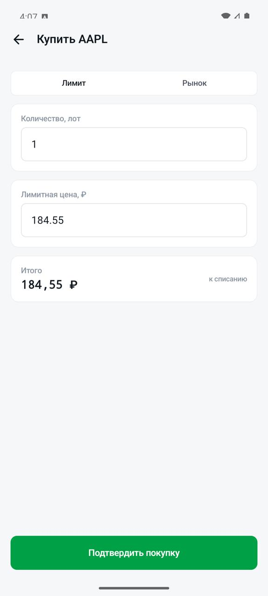
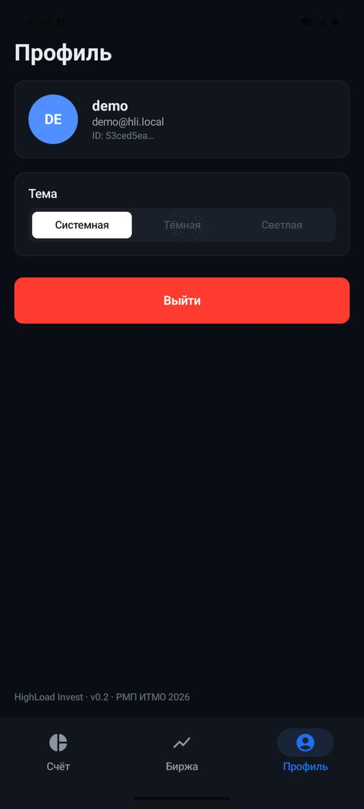
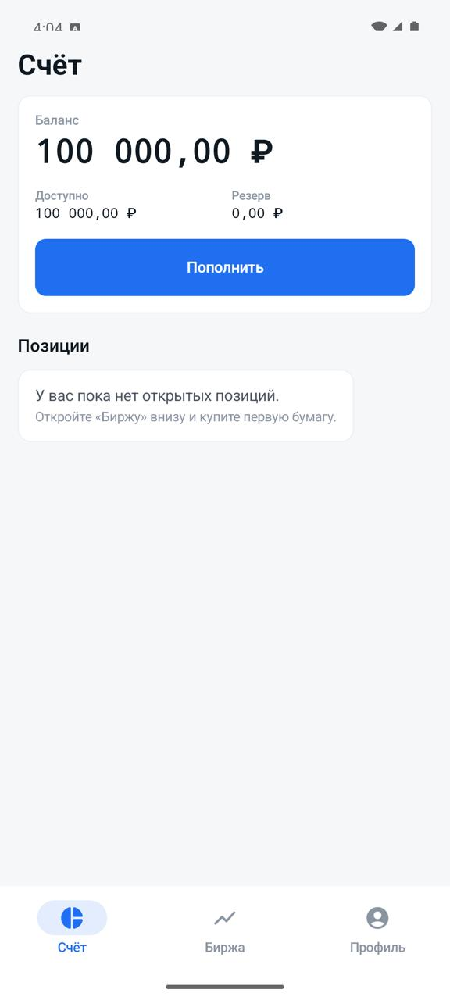
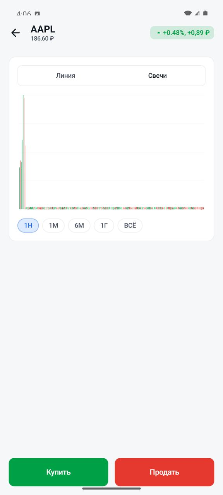

C4 · Level 1
Контекст системы

Пользователь, мобильные клиенты, торговая платформа и контур наблюдаемости.
C4 · Level 1
Пользователь, мобильные клиенты, торговая платформа и контур наблюдаемости.
C4 · Level 2

Разделение на mobile, API Gateway, Core Banking, ingestion, storage и observability.
C4 · Level 3

REST Controller, Service Router, WebSocket Controller и Redis Subscriber.
C4 · Level 3

Char Device /dev/quotes, генератор котировок и кольцевой буфер в kernel space.
C4 · Level 3

Device Reader, Quote Parser, Batch Writer, Redis publisher и Metrics Exporter.
C4 · Level 3

Регистрация, профили пользователей, токены, сессии и PostgreSQL repositories.
C4 · Level 3

Order Processor, Balance Manager, Portfolio Manager, Price Checker и SQL Repository.
Финансовый контур
userId, ticker, action, lots, pricePerLot.SELECT ... FOR UPDATE блокирует счёт пользователя на время операции.accounts, portfolio, trades и выполняется COMMIT.
Мобильные клиенты





Observability